Kibana Guide: ES|QL Panels and Variable Controls
|
This content was generated with the assistance of AI and should be verified against the official documentation before being relied on in production. |
Checked on 2026-11-11 against Kibana 9.5.x.
What you build
You add a panel to the dashboard Bookshelf (guides) that is drawn from an ES|QL query instead of a data view: the number of Bookshelf log records per time bucket, split by HTTP status. Then you put two variable controls on the dashboard: Severity, a static list, and URI, a list that a query fills, that allows several selections and that depends on Severity. A reader changes the controls and the query runs again with the values they chose.
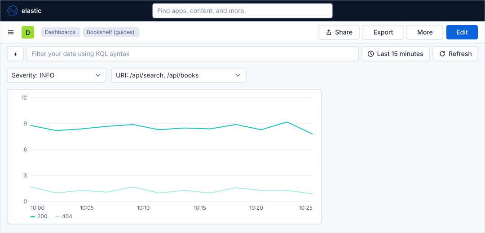
Before you start
-
Start the Kibana profile of the hands-on lab and wait about a minute:
cd lab docker compose --profile kibana up -d -
Open http://localhost:5601 and sign in as
elasticwith the passwordlab-elastic-password. When Kibana opens its full-screen welcome page, click Explore on my own. -
Do the guide Create a dashboard and the first Lens panel, which creates the dashboard Bookshelf (guides) and shows the map of a dashboard in edit mode. The guide on Lens proportion and distribution charts is the previous one in the series but is not required. This guide queries the data stream
logs-generic.otel-defaultdirectly, so it needs no data view, but the Bookshelf log records must be flowing. -
The load generator sends traffic to the Bookshelf service in its default mode, which fills the log data stream. ES|QL panels and variable controls need no licence beyond the basic one; the lab runs a trial licence anyway.
-
The guide was checked on Elasticsearch and Kibana 9.5.6. The figures are drawings of the Kibana 9.5 user interface, not screenshots, so small details can differ from your screen. The layout of the query editor, of the suggestions and of the variable control flyout is drawn from the Elastic documentation, so look for the control by its name when it is not where a figure shows it. A highlighted box with a number marks the control of the step with the same number.
Steps
The guide works on a dashboard in edit mode and in the editor of an ES|QL panel. The map of the dashboard is in the first dashboard guide; come back to it when a control is not where a figure shows it.
Kibana fills the variables ?_tstart and ?_tend with the bounds of the time picker, so the panel follows the time range of the dashboard.
Open an ES|QL panel
-
Open Dashboards in the primary navigation and click Bookshelf (guides).
-
Click Edit in the second bar.
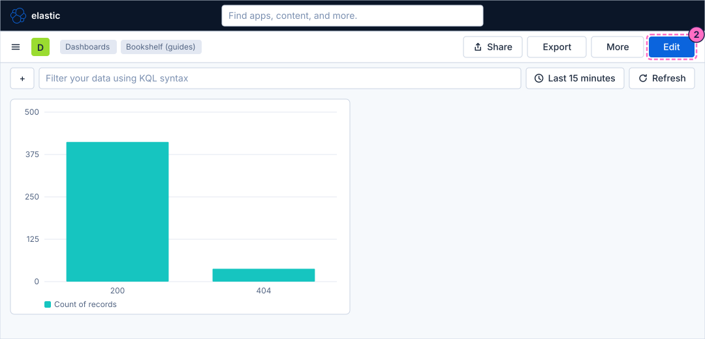
-
Click Add in the second bar. The Add to dashboard flyout opens.
-
In the flyout, click Visualization (query) ("Build charts, metrics, and tables with ES|QL."). On an empty dashboard the same editor is the card Create visualization (query).
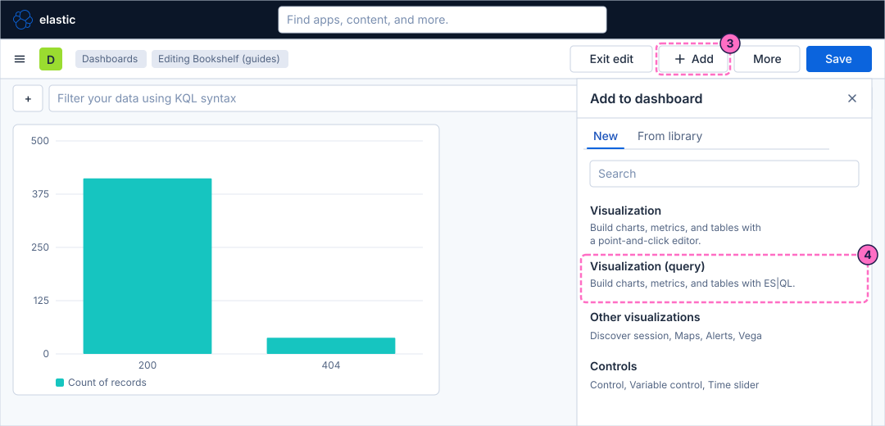
Write the query and choose the chart
-
Click in the query editor and type the query. It counts the log records of the dashboard time range in buckets of the time axis:
FROM logs-generic.otel-default | WHERE @timestamp >= ?_tstart AND @timestamp < ?_tend | STATS requests = COUNT(*) BY bucket = BUCKET(@timestamp, 50, ?_tstart, ?_tend) | SORT bucket -
Run the query with the run button of the editor. The panel draws a chart from the result: a time column and a number column become a line or bar chart over time.
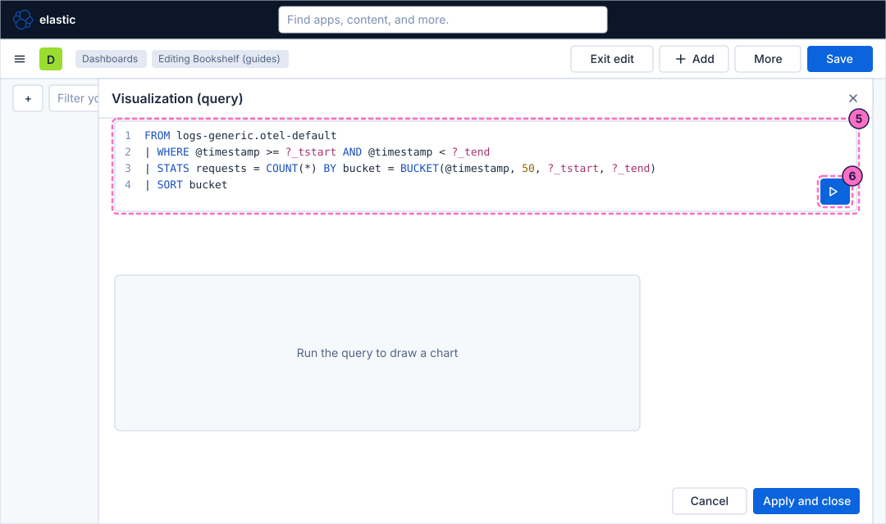
-
Edit the query to split the count by status: replace the
STATSline with these two lines.| STATS requests = COUNT(*) BY bucket = BUCKET(@timestamp, 50, ?_tstart, ?_tend), status = attributes.status -
Run the query again. The first grouping column goes to the horizontal axis and the second one becomes the breakdown, so the chart now has one series per status.
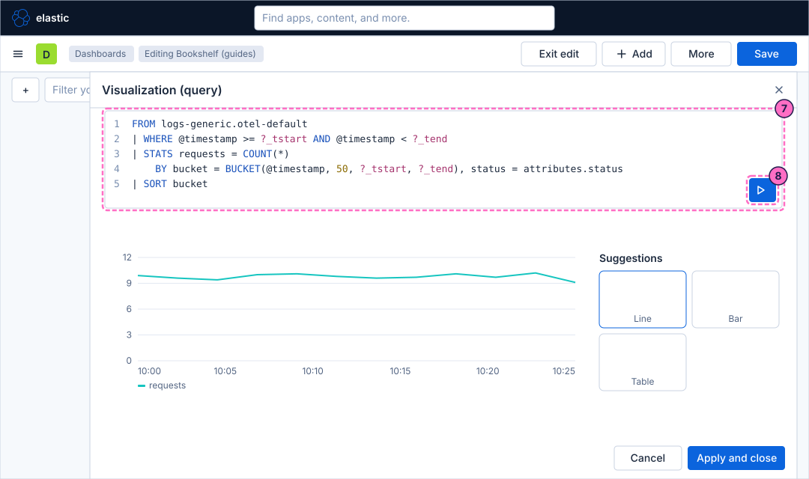
-
Look at the Suggestions next to the chart: they are alternative charts for the same result. Choose the one that draws a line chart with the two series
200and404.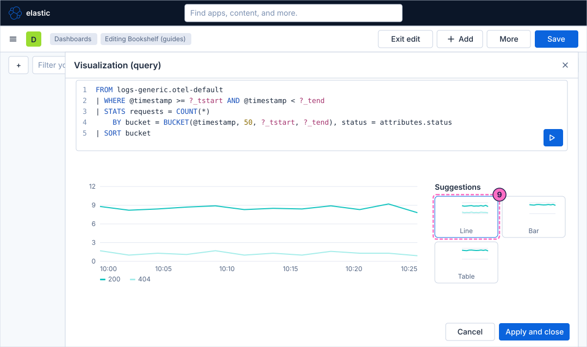
Add a static control
-
In the
WHEREcommand, add a line below the time filter. As soon as you type?severity, the editor offers its autocomplete list:AND severity_text == ?severity -
In the autocomplete list, choose Create control. A flyout for the variable control opens.
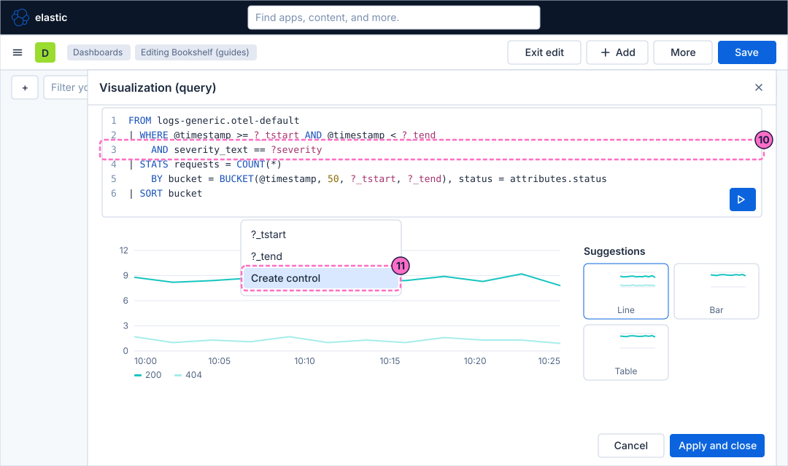
-
In the flyout, choose the control type that lists static values.
-
Enter the values
INFOandERROR. -
Check that the variable name is
?severityand keep the label Severity. The control keeps single selection. -
Confirm the flyout with its save button.
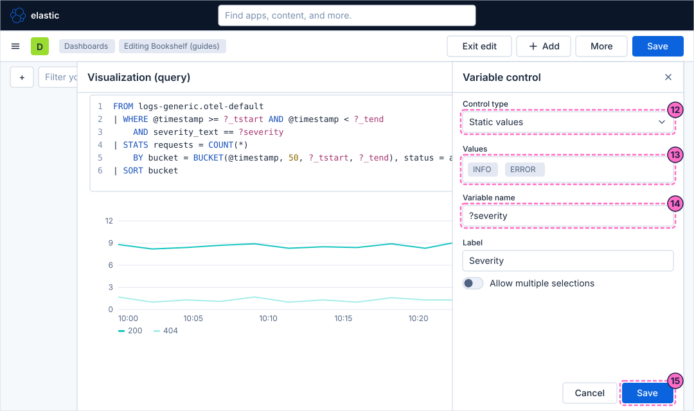
Add a control fed by a query, with several selections
-
Add one more line to the
WHEREcommand.MV_INTERSECTSkeeps a record when its value is any of the selected values, which is what a control with several selections needs:AND MV_INTERSECTS(attributes.uri, ?uri) -
In the autocomplete list, choose Create control again.
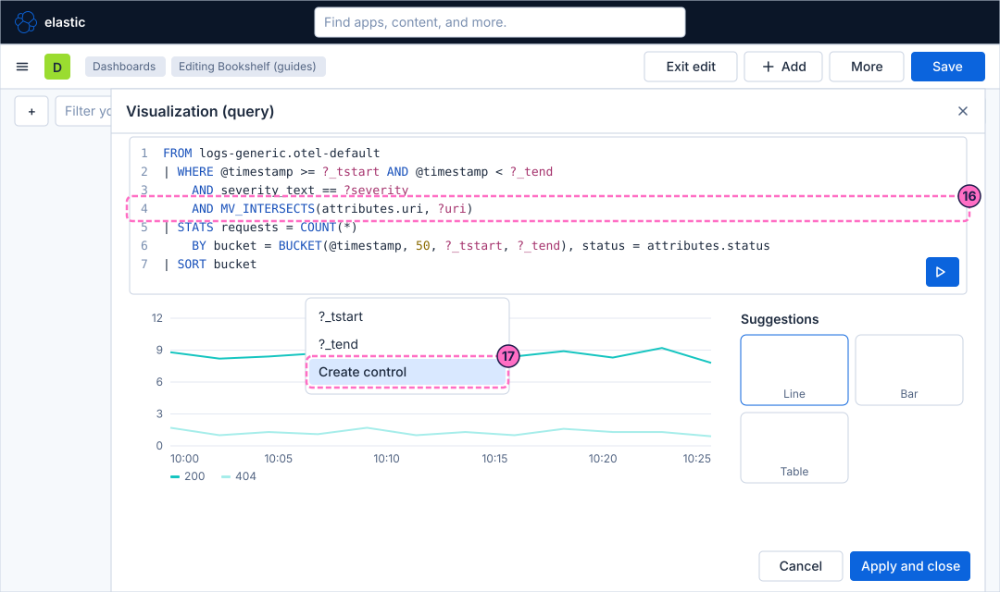
-
In the flyout, choose the control type that takes its values from a query.
-
Type the query of the control. It lists the URIs of the time range, and because it uses
?severityit only offers the URIs of the severity that is selected: that is how controls are chained.FROM logs-generic.otel-default | WHERE @timestamp <= ?_tend AND @timestamp > ?_tstart AND severity_text == ?severity | STATS BY attributes.uri -
Check that the variable name is
?uriand set the label to URI. -
Turn on Allow multiple selections. Several values then can be chosen at the same time, which only a value variable with a single question mark allows.
-
Confirm the flyout with its save button.
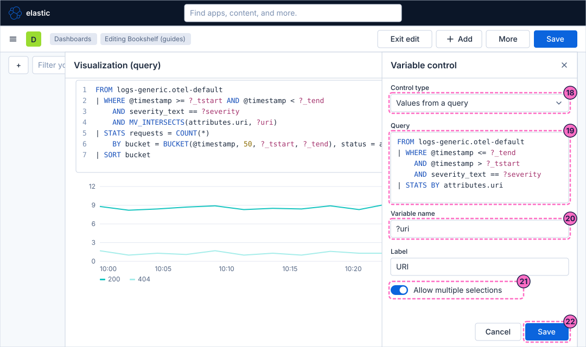
Use the controls on the dashboard
-
Click Apply and close at the bottom of the editor. The panel is on the dashboard, and the two controls appear on it.
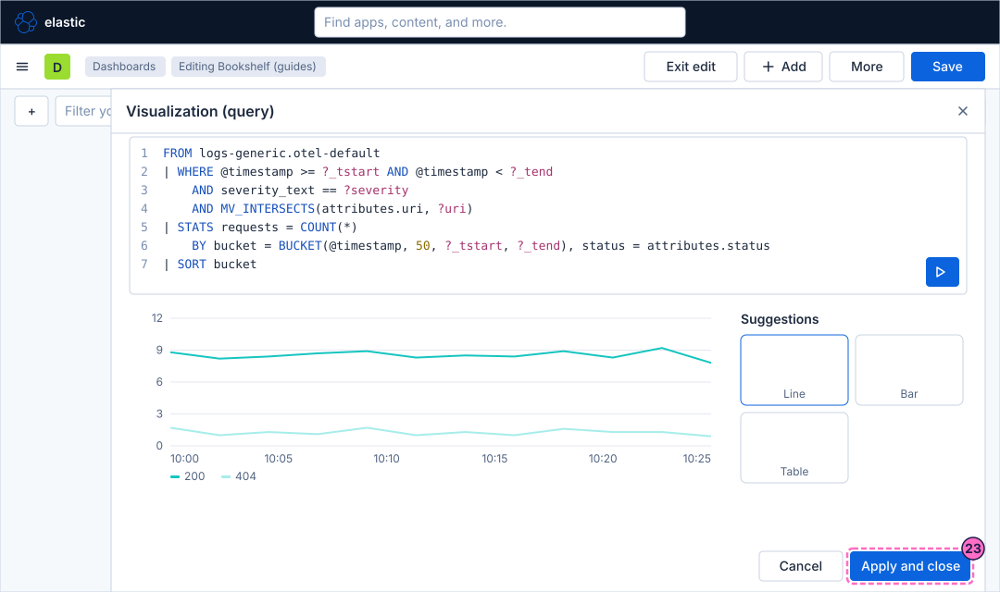
-
Open the Severity control and select
INFO. The query runs again with that value. -
Open the URI control, which now lists the URIs of
INFOrecords, and select two of them, for example/api/searchand/api/books.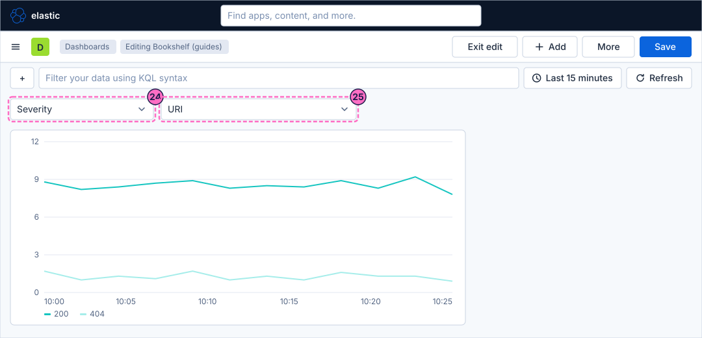
-
Click Save in the second bar.
-
Click Exit edit to return to view mode.
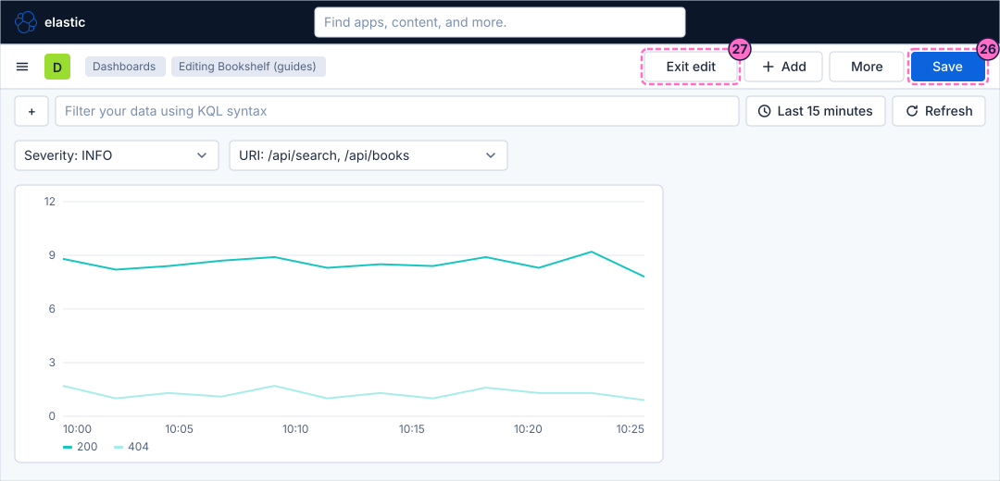
Check the result
Open Dashboards and then Bookshelf (guides). The panel must show a line per status, and the Severity and URI controls must be above it. Select Severity ERROR and check that the URI control now offers only the URIs that have error lines; if the lab has none yet, force them:
curl -X POST localhost:8090/mode/log-errorsAfter about a minute press Refresh and open the Severity control again. Restore normal traffic afterwards:
curl -X POST localhost:8090/mode/normalTo see the query that really ran, open the panel menu and choose Inspect: the request shows the values of the controls and of the time picker in place of the variables.
Variations
-
Use a control with the double question mark, such as
??group_by, to let the reader choose the field of theBYclause. A field name needs that syntax: a value variable cannot stand in for a field. -
Add a static control
?intervaland use it inBUCKET(@timestamp, ?interval)to let the reader change the bucket size. -
Turn the query into a table by choosing the table suggestion, for example to rank the URIs by count.
What can go wrong
| Symptom | Cause | Fix |
|---|---|---|
The panel shows an error about an unknown variable |
The query mentions a variable that no control provides, or the control was deleted. |
Create the control again from the autocomplete list, or remove the variable from the query. |
The chart does not follow the time picker |
The query has no filter on |
Compare |
Allow multiple selections is on, but the query shows an error |
The filter compares the field with |
Use |
The URI control is empty |
No record of the selected severity exists in the time range. |
Widen the time picker, or force records with |
A |
Only a value variable with one question mark allows multiple selection. |
Keep one value, or use a value variable. |
Clean up
Keep the dashboard: the following guides extend it. To remove it with everything else the lab stores, stop the
profile with docker compose --profile kibana down -v, which also deletes the volumes and therefore the dashboard.
Where to go next
-
Previous guide: Proportion and distribution charts.
-
Next guide: Maps, which draws the geography of the traffic.
-
Reference: ES|QL Visualizations & Variable Controls covers the column mapping, time shift, drilldowns, and the control types in full, and Controls & Drilldowns compares them with the standard dashboard controls.